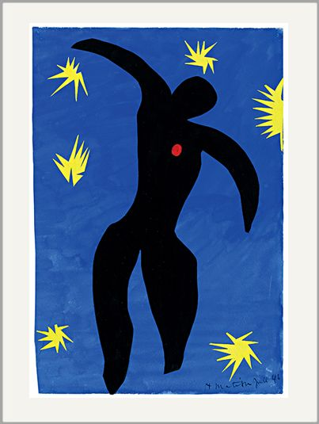
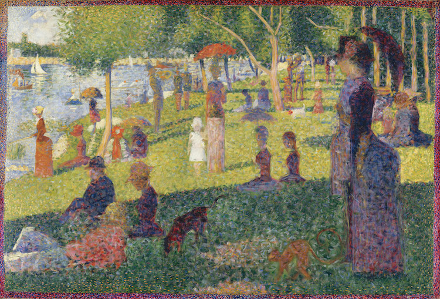
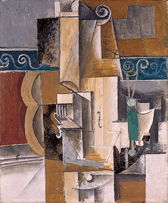

1 / 3

"Icarus" - Henri Matisse : Henri Matisse produced a number of cut-out “paintings” that are known for their rigid lines, richly saturated colors and dynamic compositions. Icarus, or The Flight of Icarus is perhaps his best known work from the book of cutouts titled Jazz. Why don't you try to create some collages using brightly coloured paper, inspired by Matisse?
2 / 3

"Sunflowers" - Van Gogh : Van Gogh’s paintings of Sunflowers are among his most famous. He did them in Arles, in the south of France, in 1888 and 1889. Vincent painted a total of five large canvases with sunflowers in a vase, with three shades of yellow ‘and nothing else’. In this way, he demonstrated that it was possible to create an image with numerous variations of a single colour, without any loss of eloquence. Why don't you try painting some flowers you can find in your local area or on the internet with only three shades of paint?
3 / 3

"A Sunday Afternoon on the Island of La Grande Jatte" (1884-1886) - Georges Seurat : The first pioneer of Pointillism was French painter Georges Seurat, who founded the Neo-Impressionist movement. One of his greatest masterpieces, A Sunday Afternoon on the Island of La Grande Jatte, was one of the leading examples of Pointillism. The dotty composition depicts 19th century Parisians relaxing on the River Seine. Why don't you try creating an image using only dots?
3 / 3

"Guitar and Violin" - Pablo Picasso : The painting was painted in the style of cubism, which Pablo Picasso was closely interested in. “Synthetic Cubism” is the direction in which work is attributed. This phase of cubism is characterized by contrast and decorativeness, most often in this manner still-lifes, posters or paintings are written, where the main characters are everyday objects and musical instruments. Why don't you try to draw an important object in your house in a disjointed way, only focusing on specific details?